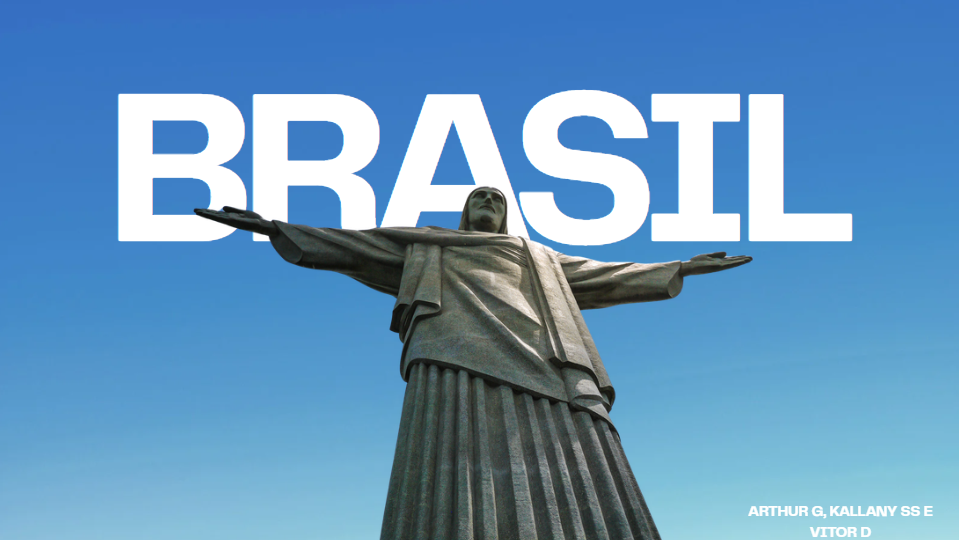
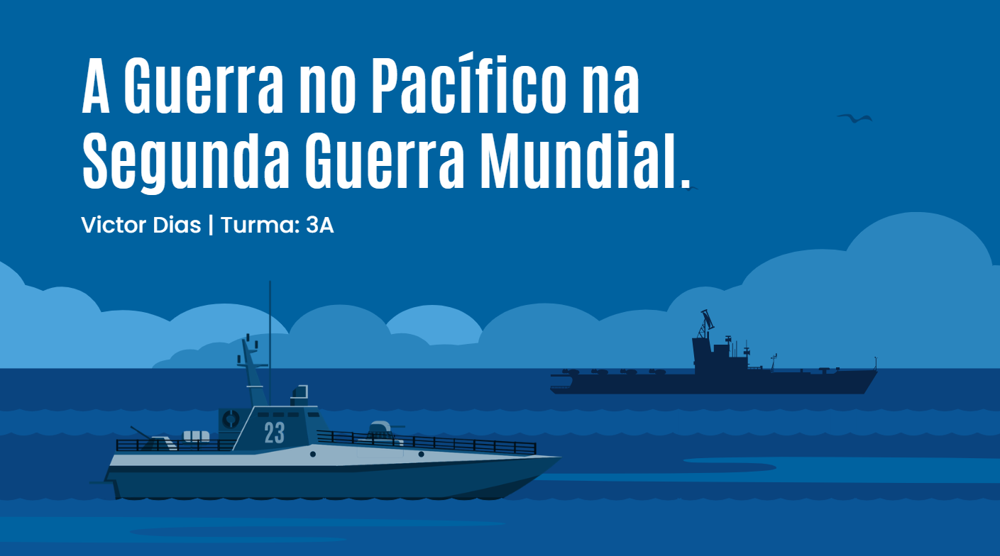
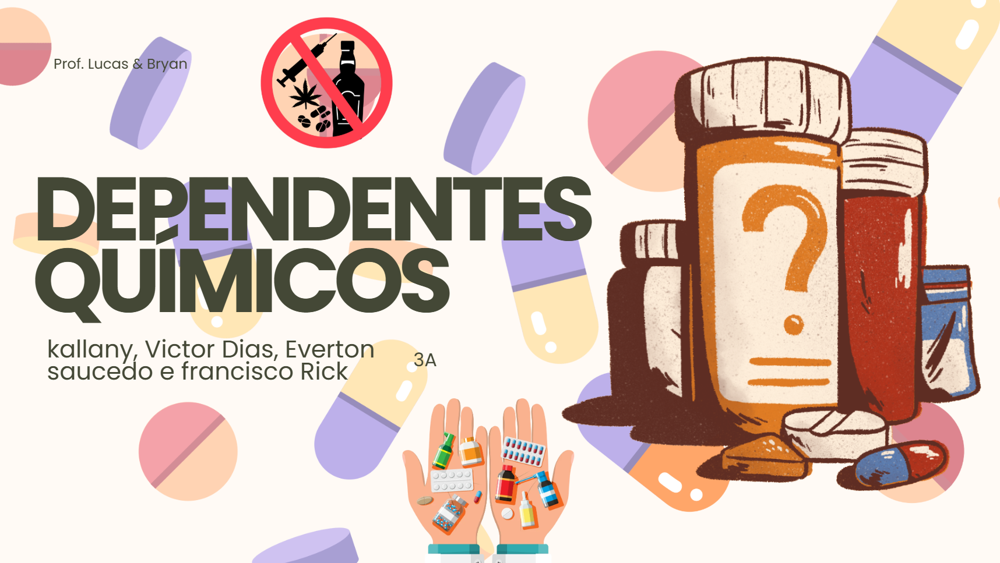
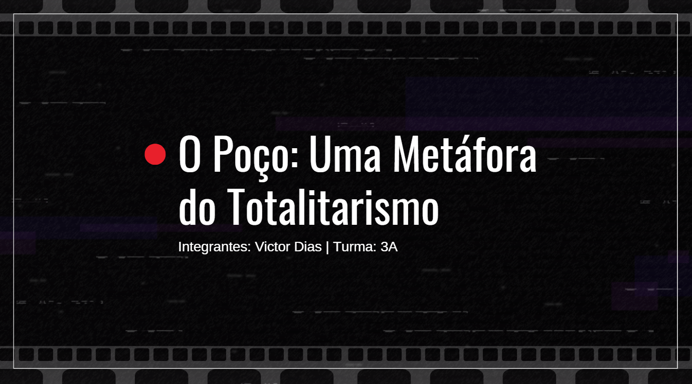

HUMANAS
ATIVIDADES

Criação de Jornal de Época
C3, H15, H16, H20, C6, H39
Produzir uma capa de jornal de época sobre a Grande Guerra e Revolução Russa utilizando fontes históricas.
Criação de matérias contextualizando aspectos políticos, econômicos e culturais entre 1900 e 1920 com design inspirado no início do século XX.
"A atividade permitiu unir criatividade, pesquisa histórica e análise crítica. Produzir o jornal estimulou habilidades de produção textual e planejamento visual."

Abrir Apresentação Canva ↗Introdução à Geopolítica – 2026
C1, H1, H2, H3, H4, H5
Iniciar o estudo de geopolítica de forma interativa através de jogos e pesquisa sobre diferentes nações.
Uso de jogos como Worldle para localização geográfica e criação de apresentações comparativas entre realidades de diferentes países.
"A atividade foi dinâmica e envolvente. Os jogos iniciais tornaram o estudo mais acessível e a pesquisa promoveu uma visão ampla do mundo contemporâneo."

Tecnologias da 2ª Revolução Industrial
H1, H2, H5
Compreender a difusão tecnológica e industrial na 2ª metade do século XIX e seus impactos geopolíticos.
Desenvolvimento de uma linha do tempo indicando ferrovias, telégrafos e indústrias, relacionando-as com o neocolonialismo e a paz armada.
"A atividade é muito interessante para visualizar a expansão industrial de forma contextualizada, facilitando a análise dos impactos sociais e políticos."

Abrir Dossiê no Canva ↗A Guerra no Pacífico na Segunda Guerra Mundial
C2, H10 e H11
Pesquisar e analisar um tema da Segunda Guerra Mundial, compreendendo seu contexto histórico, seus impactos e a importância das fontes primárias para a construção do conhecimento histórico.
A atividade consistiu na elaboração de um dossiê histórico sobre um dos principais acontecimentos da Segunda Guerra Mundial, incluindo a contextualização do tema, descrição dos fatos, análise de uma fonte primária e utilização de referências bibliográficas para fundamentar as conclusões.
"A atividade foi muito interessante, pois permitiu aprofundar os conhecimentos sobre a Segunda Guerra Mundial e compreender a importância da análise de documentos históricos para interpretar os acontecimentos de forma crítica e fundamentada."

Abrir Apresentação no Canva ↗Quando o Outro Deixa de Ser Visto Como Humano
C2, H7 e H8
Refletir sobre o conceito de alteridade e desumanização a partir da obra de Primo Levi, relacionando esses conceitos com situações contemporâneas de preconceito, exclusão e violação da dignidade humana.
A atividade consistiu na leitura e análise de um trecho da obra É Isto um Homem?, seguida de uma pesquisa documental sobre um grupo social que enfrenta processos de desumanização na atualidade — neste caso, pessoas dependentes químicas. Com base em reportagens, dados estatísticos e pesquisas acadêmicas, foi realizada uma análise filosófica sobre como estereótipos e preconceitos afetam a dignidade dessas pessoas.
"A atividade foi muito reflexiva e importante, pois possibilitou compreender como a desumanização ainda está presente na sociedade e reforçou a necessidade de respeitar a dignidade e a individualidade de todas as pessoas."

Abrir Apresentação no Canva ↗O Poço: Uma Metáfora do Totalitarismo
H10, H22, H26 e H27
Compreender as características dos regimes totalitários por meio da análise de filmes, relacionando elementos da ficção com acontecimentos históricos e refletindo sobre seus impactos na sociedade.
A atividade consistiu em assistir a um vídeo introdutório sobre o conceito de totalitarismo, escolher um filme que abordasse temas relacionados a esse regime — no caso, O Poço — e elaborar uma apresentação destacando cenas, falas e comportamentos que representassem práticas totalitárias. Ao final, também foi realizada a leitura e discussão de um texto sobre a arquitetura do Terceiro Reich.
"A atividade foi interessante e dinâmica, pois permitiu compreender as características dos regimes totalitários de uma forma diferente, utilizando o cinema para relacionar os conteúdos estudados com exemplos práticos e estimular a reflexão crítica."
As atividades do 3º trimestre serão adicionadas aqui em breve.